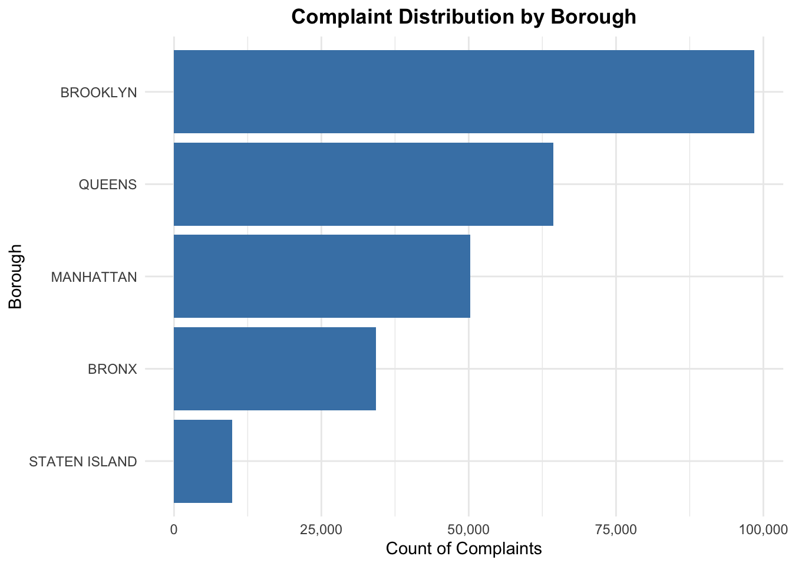
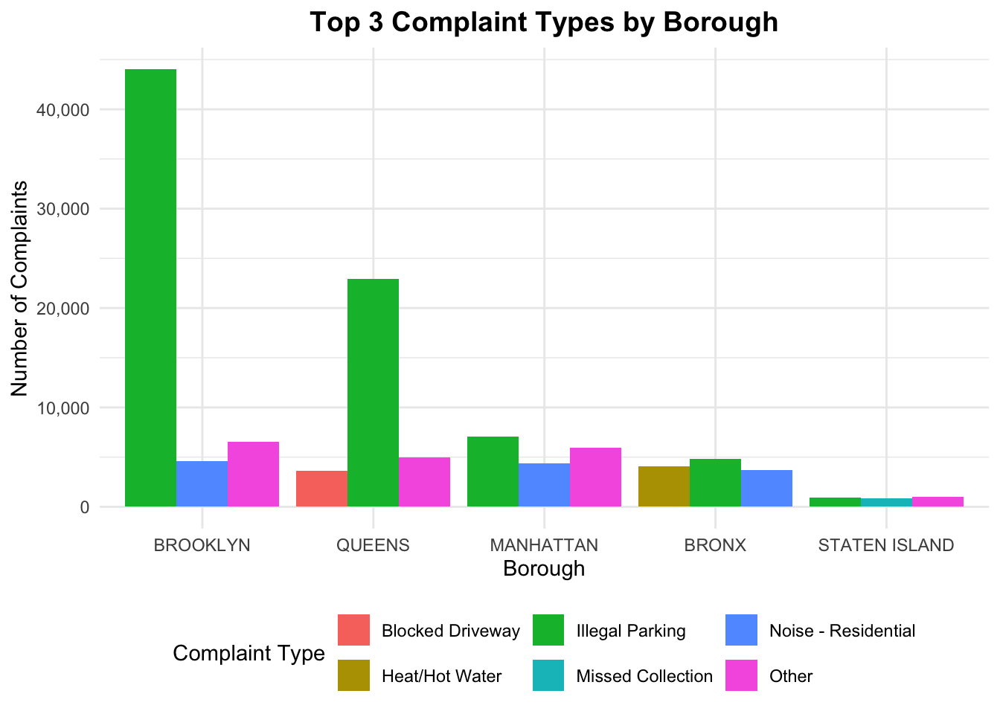

Welcome to the final project for this semester. My group and I decided to look into 311 complaints data from OpenNYC. For context, 311 is a central hub for New Yorkers to file complaints that the city government responds to. These can range anywhere from heat/hot water issues to illegal parking or loud noises. Essentially, anything that is disturbing your quality of life can be raised to 311.
This is a core feature of a city. You wouldn’t want to live somewhere with poor service. It shows that your government cares about you and your taxes are contributing to the overall wellbeing of your community. All the signs of a healthy city.
For our analysis, we wanted to see if there was a correlation between wealth and the quality of service you receive. Are wealthier neighborhoods better off? Does the city respond to their complaints faster than a poorer neighborhood? And thus, are all neighborhoods/boroughs created equal or do some get more preferential treatment than others?
To dive deeper, we used data from OpenNYC and data from the U.S. Census. The Census is a great way to estimate the median income of sub regions within NYC. Another indirect way to measure wealth is through property. Therefore, we relied on the property assessment dataset from OpenNYC as well.
It is important to note that 311 complaints are very frequent and therefore a huge dataset. An entire year’s worth of data can span 6 million rows and is very computationally heavy. For this project, we narrowed the timeframe down to just four months in order to make it more manageable. Our scope is the first four months of 2024, from January to April. This however will skew our analysis given that it is primarily during the winter season and we expect certain complaints to be higher than others.
To adjust for this, we can do a year over year analysis or get an entire year’s worth of data, albeit limited for each month. Click on the code chunks below to expand or collapse code if you’re following along. Use the navigation bar on the right to navigate through the analysis and policy brief.
Initial Data Pull
OpenNYC 311 Complaints Data
.libPaths("/Library/Frameworks/R.framework/Versions/4.5-arm64/Resources/library/RSocrata")library(RSocrata)library(dplyr)library(DT)suppressPackageStartupMessages({library(RSocrata)library(dplyr)})# this is the name of the file that will be saveddata_file <-"nyc_311_data_2024_jan_apr.rds"#check if the file already existsif (file.exists(data_file)) {# if it exists, just read it, don't need to keep redownloading df <-readRDS(data_file)} else {#otherwise conitnue and download# API endpoint with first 4 months of 2024 filtered in URL url <-"https://data.cityofnewyork.us/resource/erm2-nwe9.json?$where=created_date>='2024-01-01T00:00:00' AND created_date<'2024-05-01T00:00:00'"# assign variable and download via rsocrata df <-read.socrata(url)# Save to filesaveRDS(df, data_file)}#show first 1,000 rows in a nice, clean datatabledatatable(head(df, 1000),options =list(pageLength =10,scrollX =TRUE,autoWidth =TRUE ),filter ='top',class ='cell-border stripe',caption ="Showing first 1,000 rows of 311 complaints")
Classification Modeling
To make this project interesting and have real world applications, I decided to add in predictive analytics through machine learning. Often, in classes and at work, the majority of my time is spent on data cleaning, transformation and automation (building ETL pipelines). Very rarely do I get the chance to model data and rely on their predictive capabilities. Therefore, I wanted to use this project as a way to test out models in a new language: R.
It started out with a simple question: Can we predict where a complaint came from (neighborhood) based on the complaint? This can help us determine how long it will take for the complaint to be resolved since we know the average turnaround time for a borough. But this quickly proved difficult and I ran into problems, causing me to pivot three times.
To predict neighborhood from complaint data, we’ll need to build a classification model. Randomforest is the one I’m most familiar with and have used in Python, so I thought it would be fairly straightforward to translate it over into R. This is a supervised machine learning algorithm that can handle both regression (numerical ouput) and classification (categorical outputs). It also benefits from ensemble learning which means that it is composed of a number of smaller models (decision trees) that are aggregated together to get one final result. It’s like having a group of people make a decision and taking the most popular answer out of the group
For the first test, I pulled data from the 311 complaints dataset, narrowing the timeframe to the first four months of 2024. Just four months ended up having over one million rows. For the initial model, the borough was the target variable and the following columns were the features:
complaint_type
descriptor
agency
open_data_channel_type
location_type
hour
day_of_week
month
is_weekend
How do we measure accuracy? Usually with regression models, you use R-squared which tells you how close the model was to the actual numbers. For classification models, we rely on accuracy or how often we are right (% of correct predictions). There are other metrics to evaluate them but for simplicity’s sake, I went with accuracy. The formula is below:
When training models, it’s important to split data into training and testing batches. This lets the model get familiar with the training data and become efficient in predicting values in the test data. And therefore, when it comes across unfamiliar new datapoints, it can predict more accurately.
Using a randomforest classifier model and splitting the dataset into a training and testing set, I ran the model. This however was very disappointing, with a model accuracy of 38.46%. There were some things we can do to improve the accuracy such as applying a k fold cross validation and grid search to find the optimal parameters for the model. However, this didn’t improve the outcome greatly. Ultimately, I wasn’t confident in saying that we can predict where the complaint came from with a 38% accuracy.
The following code chunks show the initial model on the 311 complaints with a 38% accuracy
Prepare data for prediction model
library(dplyr)library(tidyr)library(lubridate)# this is the data wrangling partdf_model <- df %>%# we remove rows with missing target or key predictorsfilter(!is.na(borough),!is.na(complaint_type), borough !="Unspecified") %>%# take existing created date of complaint and break down hour, day, month. this allows for more granularitymutate(hour =hour(created_date),day_of_week =wday(created_date, label =TRUE),month =month(created_date, label =TRUE),is_weekend = day_of_week %in%c("Sat", "Sun") ) %>%#predictive featuresselect(# target variable borough,# features we use to predict target variable complaint_type, descriptor, agency, open_data_channel_type, location_type, hour, day_of_week, month, is_weekend ) %>%# drop missing valuesdrop_na()# print class distributiontable(df_model$borough) %>%as.data.frame() %>%arrange(desc(Freq)) %>%print()
Build Randomforest prediction model
options(repos =c(CRAN ="https://cran.rstudio.com/")) #need CRAN otherwise we get error#install random forest and other modules as needed if (!require("randomForest")) install.packages("randomForest")if (!require("caret")) install.packages("caret")if (!require("forcats")) install.packages("forcats")library(randomForest)library(caret)library(dplyr)library(forcats) #fct_lump_n()set.seed(123)#which columns have too many categoriessapply(df_model, function(x) length(unique(x))) %>%sort(decreasing =TRUE) %>%print()#keep only top 20-30 categories for high cardinality featuresdf_model_prep <- df_model %>%mutate(#keep only top 30 complaint types, rest become Othercomplaint_type =fct_lump_n(as.factor(complaint_type), n =30),#keep only top 30 descriptorsdescriptor =fct_lump_n(as.factor(descriptor), n =30),#keep only top 20 location typeslocation_type =fct_lump_n(as.factor(location_type), n =20),# convert other character columns to factorsagency =as.factor(agency),borough =as.factor(borough),day_of_week =as.factor(day_of_week),month =as.factor(month) )# split into train/test using standard 80/20 ratio# use indexing to access and partition rows like in pythontrain_index <-createDataPartition(df_model_prep$borough, p =0.8, list =FALSE)train_data <- df_model_prep[train_index, ]test_data <- df_model_prep[-train_index, ]# train Randomforest model# sometimes model took over 2 hours to run, so limit to n rows to speed it upif(nrow(train_data) >50000) { train_sample <- train_data %>%sample_n(50000)} else { train_sample <- train_data}#assign variable and run modelrf_model <-randomForest( borough ~ .,data = train_sample,ntree =50, #100 ntrees was taking too long so I used 50importance =TRUE,na.action = na.omit)#make predictionspredictions <-predict(rf_model, test_data)# confusion matrix for evaluating modelconfusion_matrix <-confusionMatrix(predictions, as.factor(test_data$borough))
What if we expand the timeframe? We can take 100,000 rows from each month and get a years worth of data for the model. The complaints from the first four months were primarily based on heat and hot water, which made sense given that it was during winter. But if we expanded to the rest of the year, complaints would balance out across the seasons. It would also give the model better quality data to predict on. So I reran the datapull, limiting to 100,000 rows for each months and reran the model. This resulted in a model accuracy of 39% which was barely an improvement. Pretty disappointing.
Download stratified sample of 2024 data
#r socrata gives issues, so have to map out the path where it is downloaded so R can find it .libPaths("/Library/Frameworks/R.framework/Versions/4.5-arm64/Resources/library/RSocrata")library(RSocrata)library(dplyr)# i get alot of messages showing download progress. dont need it, so suppress it for nowsuppressPackageStartupMessages({library(RSocrata)library(dplyr)})# this is the name of the file that will be saveddata_file <-"nyc_311_data_2024_stratified.rds"#check if the file already existsif (file.exists(data_file)) { df_2024 <-readRDS(data_file) #if it exists, just read it. no need to redownload again} else {# create empty list to store monthly dataframes and concat at the end monthly_data_list <-list()# for loop through each month of 2024for(month in1:12) {# reate date strings for the month start_date <-sprintf("2024-%02d-01T00:00:00", month)# calculate end dateif(month ==12) { end_date <-"2025-01-01T00:00:00" } else { end_date <-sprintf("2024-%02d-01T00:00:00", month +1) }# download data for each month using the start and end date, which store each months date in them. # set limit to 100000 rows. this takes the first 100000 rows, its not fully random url <-paste0("https://data.cityofnewyork.us/resource/erm2-nwe9.json?","$where=created_date>='", start_date, "' AND created_date<'", end_date, "'","&$limit=100000" )#call socrata package month_data <-read.socrata(url)#store in list monthly_data_list[[month]] <- month_data }#concact all lists into a dataframe df_2024 <-bind_rows(monthly_data_list)#save to filesaveRDS(df_2024, data_file)}#print out statsdf_2024 %>%mutate(month =format(as.Date(created_date), "%Y-%m")) %>%count(month) %>%arrange(month) %>%print()
Prepare 2024 data for borough prediction
library(dplyr)library(lubridate)library(tidyr)#create features for borough predictiondf_classification <- df_2024 %>%# remove rows with missing boroughfilter(!is.na(borough), borough !="Unspecified") %>%# take existing created date of complaint and break down hour, day, month. this allows for more granularitymutate(hour =hour(created_date),day_of_week =wday(created_date, label =TRUE),month =month(created_date, label =TRUE),is_weekend = day_of_week %in%c("Sat", "Sun") ) %>%# select relevant featuresselect( borough, # target variable complaint_type, # features we use to predict target variable descriptor, agency, open_data_channel_type, location_type, hour, day_of_week, month, is_weekend ) %>%# drop nadrop_na(complaint_type, agency)#print statstable(df_classification$borough) %>%as.data.frame() %>%arrange(desc(Freq)) %>%print()
Build Randomforest classification model on 2024 data
options(repos =c(CRAN ="https://cran.rstudio.com/")) #need CRAN link or you get an error#install libraries if neededif (!require("randomForest")) install.packages("randomForest")if (!require("caret")) install.packages("caret")if (!require("forcats")) install.packages("forcats")library(randomForest)library(caret)library(dplyr)library(forcats)#seed for reproducibility set.seed(123)# final modeling datasetand reduce number of values to 20-30df_model <- df_classification %>%mutate(complaint_type =fct_lump_n(as.factor(complaint_type), n =30),descriptor =fct_lump_n(as.factor(descriptor), n =30),location_type =fct_lump_n(as.factor(location_type), n =20),agency =as.factor(agency),borough =as.factor(borough),day_of_week =as.factor(day_of_week),month =as.factor(month) ) %>%drop_na()# split into train/test using standard 80/20 ratio# use indexing to access and partition rows like in pythontrain_index <-createDataPartition(df_model$borough, p =0.8, list =FALSE)train_data <- df_model[train_index, ]test_data <- df_model[-train_index, ]# train Randomforest model# sometimes model took over 2 hours to run, so limit to n rows to speed it upif(nrow(train_data) >100000) { train_sample <- train_data %>%sample_n(100000)} else { train_sample <- train_data}# train Randomforest modelrf_model <-randomForest( borough ~ .,data = train_sample,ntree =50, #100 ntrees took way too long, limit to 50importance =TRUE,na.action = na.omit)#make predictionspredictions <-predict(rf_model, test_data)#evaluate model with confusion matrixconfusion_matrix <-confusionMatrix(predictions, as.factor(test_data$borough))cat("Overall Accuracy:", round(confusion_matrix$overall['Accuracy'] *100, 2), "%\n\n")
I ended up pivoting a third time and using the 311 resolution satisfaction dataset instead. This was much smaller, ~436,000 rows, and had a much longer time frame rather than the first four months (spanning from 2022 to 2025). Having the resolution satisfaction data was useful as we can see satisfaction across the boroughs. One thing to note was that the satisfaction metric in this dataset was qualitative. It ranged from strongly agree to strongly disagree. Using conditional logic, I assigned a numerical value to each. This ranges from 1 being strongly disagree to 5 being strongly agree. From my experience, we would usually use some form of one hot encoding to convert categorical data to numerical for models. But I later learned that RandomForest models don’t need this encoding as each tree splits on categories. I left it in the code however because I liked combining both regex and str_detect with conditions.
Running the Randomforest model through this yielded a model accuracy of 45.26%. Despite numerous tests and data cleanups, I could not get a higher score. So for this project, we decided to keep it as is. 45% of the time, our model will accurately tell you which borough a complaint came from.
Exploratory Data Analysis
Download 311 Satisfaction Survey Data
#r socrata gives issues, so have to map out the path where it is downloaded so R can find it .libPaths("/Library/Frameworks/R.framework/Versions/4.5-arm64/Resources/library/RSocrata")library(RSocrata)library(dplyr)library(DT)#suppress download messagessuppressPackageStartupMessages({library(RSocrata)library(dplyr)})# this is the file name of downloaded data_file <-"nyc_311_satisfaction_survey.rds"#check if the file already existsif (file.exists(data_file)) {#if it does, just read it. no need to redownload df_satisfaction <-readRDS(data_file)} else {#if it doesn't exist, download it# API URL endpoint for satisfaction survey data url <-"https://data.cityofnewyork.us/resource/5ijn-vbdv.json"#download the data df_satisfaction <-read.socrata(url)# save to filesaveRDS(df_satisfaction, data_file)}# show first 1000 rows in nice clean datatabledatatable(head(df_satisfaction, 1000),options =list(pageLength =5,scrollX =TRUE,autoWidth =TRUE ),filter ='top',class ='cell-border stripe',caption ="Showing first 1,000 rows of 311 Satisfaction Survey data")
Before we run the model, we convert the categorical satisfaction metrics to numerical. Let’s look at the total count of each satisfaction option.
Data wrangling
library(dplyr)library(DT)library(stringr)# create function to convert satisfaction text to numeric scoreconvert_satisfaction_to_numeric <-function(satisfaction_text) {case_when(str_detect(satisfaction_text, regex("Strongly Agree|Very Satisfied|Strongly Satisfied", ignore_case =TRUE)) ~5,str_detect(satisfaction_text, regex("^Agree|^Satisfied", ignore_case =TRUE)) ~4,str_detect(satisfaction_text, regex("Neutral|Neither", ignore_case =TRUE)) ~3,str_detect(satisfaction_text, regex("Dissatisfied|^Disagree", ignore_case =TRUE)) ~2,str_detect(satisfaction_text, regex("Strongly Disagree|Strongly Dissatisfied|Very Dissatisfied", ignore_case =TRUE)) ~1,TRUE~NA_real_ )}# Create table of unique values in overall_satisfactionsatisfaction_table <-as.data.frame(table(df_satisfaction$overall_satisfaction, useNA ="ifany"))colnames(satisfaction_table) <-c("Overall Satisfaction", "Unique Count")
Show code
#show data in clean formatted datatabledatatable(satisfaction_table, options =list(pageLength =10, dom ='t'),rownames =FALSE) %>%formatCurrency('Unique Count', currency ="", interval =3, mark =",", digits =0)
Once we remove missing values and clean up the data, we have a final dataframe that we can pass into the randomforest model
Data wrangling
#prepare modeling datasetdf_model_satisfaction <- df_satisfaction %>%#filter for rows with borough informationfilter(!is.na(borough), borough !="Unspecified", borough !="") %>%filter(!is.na(overall_satisfaction)) %>%# convert satisfaction to numericmutate(satisfaction_score =convert_satisfaction_to_numeric(overall_satisfaction),#create numeric versions of year and monthyear =as.numeric(year),month =as.numeric(month) ) %>%# remove nafilter(!is.na(satisfaction_score))# Create summary tablesummary_df <- df_model_satisfaction %>%select(borough, satisfaction_score, year, month) %>%summary() %>%as.data.frame() %>% tidyr::separate(Freq, into =c("Statistic", "Value"), sep =":", extra ="merge") %>%select(Variable = Var2, Statistic, Value) %>%filter(!is.na(Value))
Build classification model
library(tidyr)library(DT)options(repos =c(CRAN ="https://cran.rstudio.com/")) #need CRAN link or you get error##install packages if neededif (!require("randomForest")) install.packages("randomForest")if (!require("caret")) install.packages("caret")if (!require("forcats")) install.packages("forcats")library(randomForest)library(caret)library(dplyr)library(forcats)#random number seed for reproducibilityset.seed(123)#prepare final modeling datasetdf_final <- df_model_satisfaction %>%mutate(#convert categorical variables to factors and reduce values to 50. randomforest is limited to 53 featurescomplaint_type =fct_lump_n(as.factor(complaint_type), n =50),descriptor =fct_lump_n(as.factor(descriptor), n =50),agency =as.factor(agency),dissatisfaction_reason =fct_lump_n(as.factor(dissatisfaction_reason), n =50),borough =as.factor(borough) ) %>%select(borough, satisfaction_score, complaint_type, descriptor, agency, dissatisfaction_reason, year, month) %>%drop_na()# Borough distribution tableborough_table <-as.data.frame(table(df_final$borough))colnames(borough_table) <-c("Borough", "Count")
Let’s take a look at complaint distribution by borough. Brooklyn has the most complaints out of any borough! Nearly double the complaints of Manhattan!
Borough distribution
library(ggplot2)#plot compplaints distribution by boroughggplot(borough_table %>%arrange(desc(Count)), aes(x =reorder(Borough, Count), y = Count)) +geom_col(fill ="steelblue") +coord_flip() +scale_y_continuous(labels = scales::comma) +labs(title ="Complaint Distribution by Borough", #adjust title x and y values as neededx ="Borough",y ="Count of Complaints") +theme_minimal() +theme(plot.title =element_text(hjust =0.5, face ="bold"))

Let’s also look at the number one complaint from each borough. Illegal parking is the biggest complaint type in Brooklyn and Queens. Imagine you are a homeowner and some random car is parked in your driveway. That’s usually the case for a lot of residential areas and it drives people crazy. For Manhattan, we notice a lower number because there are fewer areas to park in a crowded borough.
Top complaints by borough
library(dplyr)library(ggplot2)#get the top 3 complaint types for each boroughtop_complaints_by_borough <- df_final %>%group_by(borough, complaint_type) %>%summarise(count =n(), .groups ='drop') %>%group_by(borough) %>%slice_max(order_by = count, n =3) %>%#show top 3 by complaint countungroup() %>%arrange(borough, desc(count)) %>%mutate(complaint_type =factor(complaint_type))#create grouped bar chartggplot(top_complaints_by_borough, aes(x =reorder(borough, -count), y = count, fill = complaint_type)) +geom_col(position ="dodge") +scale_y_continuous(labels = scales::comma) +labs(title ="Top 3 Complaint Types by Borough", #adjust title x and y valuesx ="Borough",y ="Number of Complaints",fill ="Complaint Type") +theme_minimal() +theme(plot.title =element_text(hjust =0.5, face ="bold", size =14),legend.position ="bottom",axis.text.x =element_text(angle =0))
Running the Model
The following code chunk splits the 311 resolution satisfaction dataset into training and testing sets using index partitioning. From here, we run the model using 100 decision trees. This means it is producing 100 trees and taking the most popular borough out of all of them.
Build classification model
# Split into 80/20 standard training and test set. use indexing to access df rows train_index <-createDataPartition(df_final$borough, p =0.8, list =FALSE)train_data <- df_final[train_index, ]test_data <- df_final[-train_index, ]#train Randomforest modelrf_model <-randomForest( borough ~ .,data = train_data,ntree =100, #100 ntrees depthimportance =TRUE,na.action = na.omit)#make predictionspredictions <-predict(rf_model, test_data)#evaluate modelconfusion_matrix <-confusionMatrix(predictions, test_data$borough)
At last, we ran the model! How accurate is it? Not the best, but still better than our initial model
Model accuracy
# create model results summary table to show accuracyresults_summary <-data.frame(Metric =c("Model Accuracy", "Random Guessing", "Number of Boroughs"),Value =c(paste0(round(confusion_matrix$overall['Accuracy'] *100, 2), "%"),paste0(round(100/length(unique(df_final$borough)), 2), "%"),length(unique(df_final$borough)) ))#show in databledatatable(results_summary, options =list(pageLength =10, dom ='t'),rownames =FALSE)
Let’s take a look at the confusion matrix below. It’s a big confusing, but the simplest way to interpret this is that it shows where the model got it right vs. where it got confused. Diagonal values are correct values and anything outside are incorrect. Ideally you want lower numbers outside and higher numbers diagonally.
Cell (Brooklyn, Manhattan) = 2,565 means the model predicted Brooklyn 2,565 times when it was actually Manhattan Cell (Queens, Queens) = 3,961 means the model correctly predicted Queens 3,961 times
Model evaluation
# show confusion matrix as datatableconfusion_df <-as.data.frame.matrix(confusion_matrix$table)confusion_df <-cbind(Predicted =rownames(confusion_df), confusion_df)#get the names of all numeric columnsnumeric_cols <-colnames(confusion_df)[colnames(confusion_df) !="Predicted"]#format datatable numbers in clean presentable waydatatable(confusion_df, options =list(pageLength =10, dom ='t'),rownames =FALSE) %>%formatCurrency(numeric_cols, currency ="", interval =3, mark =",", digits =0)
Which features were most important in helping the model predict which borough the complaint is from? Description followed by complaint type. It appears that certain boroughs have specific complaints. For this graph, we use a metric called MeanDecreaseGini which assesses how much a feature reduces uncertainty when making predictions. A low Gini indicates that there is little to no confusion within a group and a model is able to accurately predict/sort a borough based on the features. Conversely, a high Gini indicates that the model has a hard time accurately predicting. We can see this in the complaints type and description features. These are open ended, specific and descriptive, allowing for more distinction between boroughs. Something like month is numeric and provides no significant detail in determining the borough.
Visualize feature importance
library(ggplot2)#put most important features in a nice datatableimportance_df <-importance(rf_model) %>%as.data.frame() %>% tibble::rownames_to_column("Feature") %>%arrange(desc(MeanDecreaseGini))#plot most important features in a nice formatted bargraphggplot(importance_df,aes(x =reorder(Feature, MeanDecreaseGini), y = MeanDecreaseGini)) +geom_col(fill ="#0D0887") +coord_flip() +labs(#edit title subttile x and y axis namestitle ="Which Features Best Predict Borough from Satisfaction Data?",subtitle ="Higher values = more important for prediction",x ="Feature",y ="Importance Score" ) +theme_minimal(base_size =12) +theme(plot.title =element_text(face ="bold"),plot.subtitle =element_text(size =10) )

As a last test of the Randomforest model, we’ll take a random complaint and fill in all the necessary metrics. We already know which borough this complaint is from. Our goal here is to see if the model is able to correctly predict the borough.
We have a section in the code chunk below where we can enter values for each complaint metric. The output below is a sample complaint:
Borough Prediction
library(dplyr)library(DT)# create function to predict borough based on input featurespredict_borough <-function(satisfaction_score, complaint_type, descriptor, agency, dissatisfaction_reason, year, month) {# create input dataframe with proper factor levels from training data. we need a dataframe input otherwise model will return error input_data <-data.frame( #these are the columns satisfaction_score = satisfaction_score, complaint_type =factor(complaint_type, levels =levels(train_data$complaint_type)),descriptor =factor(descriptor, levels =levels(train_data$descriptor)),agency =factor(agency, levels =levels(train_data$agency)),dissatisfaction_reason =factor(dissatisfaction_reason, levels =levels(train_data$dissatisfaction_reason)),year = year,month = month )# Make prediction prediction <-predict(rf_model, input_data, type ="response") probabilities <-predict(rf_model, input_data, type ="prob")# Create results dataframe - results <-data.frame(Borough =colnames(probabilities), #boroughProbability =as.numeric(probabilities[1,]) #respective probability of getting borough ) %>%arrange(desc(Probability)) %>%mutate(Probability =paste0(round(Probability *100, 2), "%"))return(list(predicted_borough =as.character(prediction),probabilities = results ))}#Inputs: adjust these with manual inputs to replicate complaintuser_satisfaction_score <-1user_complaint_type <-"Blocked Driveway"user_descriptor <-"No Access"user_agency <-"NYPD"user_dissatisfaction_reason <-"The Agency did not correct the issue."user_year <-2024user_month <-1# make prediction based on every feature usedexample_prediction <-predict_borough(satisfaction_score = user_satisfaction_score,complaint_type = user_complaint_type,descriptor = user_descriptor,agency = user_agency,dissatisfaction_reason = user_dissatisfaction_reason,year = user_year,month = user_month)#display sample complaint features in clean tableinput_summary <-data.frame(Feature =c("Satisfaction Score", "Complaint Type", "Descriptor", "Agency", "Dissatisfaction Reason", "Year", "Month"),Value =c(user_satisfaction_score, user_complaint_type, user_descriptor, user_agency, user_dissatisfaction_reason, user_year, user_month))datatable(input_summary, options =list(pageLength =10, dom ='t'),rownames =FALSE)
Filter specific complaint
library(dplyr)library(DT)# filter for the exact complaint we want to use to test. we can plug this into the model to validatespecific_complaint <- df_final %>%filter( borough =="BROOKLYN", satisfaction_score ==1, complaint_type =="Blocked Driveway", descriptor =="No Access", agency =="NYPD", dissatisfaction_reason =="The Agency did not correct the issue.", year ==2024, month ==1 )#show similar complaints from same boroughsimilar_complaints <- df_final %>%filter( borough =="BROOKLYN", complaint_type =="Blocked Driveway" ) %>%head(10)#format output in clean datatabledatatable(specific_complaint, options =list(pageLength =5, scrollX =TRUE),rownames =FALSE)
This is a real complaint from Brooklyn. We know that average turnaround time is roughly 12 days for a complaint from this borough. Where does our model predict the complaint came from? There’s roughly a 45% chance that we will be accurate here.
Below is the model’s probability of outputting a borough based on the complaint.
Show code
datatable(example_prediction$probabilities, options =list(pageLength =10, dom ='t'),rownames =FALSE)
Conclusion
Overall, this was a very fun question to answer and made the project much more interesting than just standard data cleaning and visualization. It was very surprising to find out that wealth does not in fact lead to faster service in NYC. Based on census data, Manhattan is the wealthiest borough but receives service that takes the longest to resolve. In contrast, Brooklyn and Queens have their issues resolved relatively quickly. Looking back on this project, there are several things I’d approach differently next time. First, I would spend more time finding datasets that have features/columns that are more descriptive. This played the biggest role in determining model outputs. Unfortunately columns such as month, year, dissatisfaction reasons don’t have enough distinguishing elements to allow the model to zone in on a borough.
I would also implement k-fold cross-validation to get a better evaluation of the model’s performance rather than relying on a single train-test split. Another improvement would be conducting a grid search to systematically find the optimal hyperparameters instead of using default values or guessing. Unfortunately I was not sure how to do this in R. I would also like to make this interactive, allowing the user to input values and have the model return a predicted borough.
Despite these limitations, this project provided valuable insights into NYC’s service delivery patterns and offered great hands-on experience with machine learning techniques. It challenged our initial assumptions and opened up interesting questions for future research and projects.